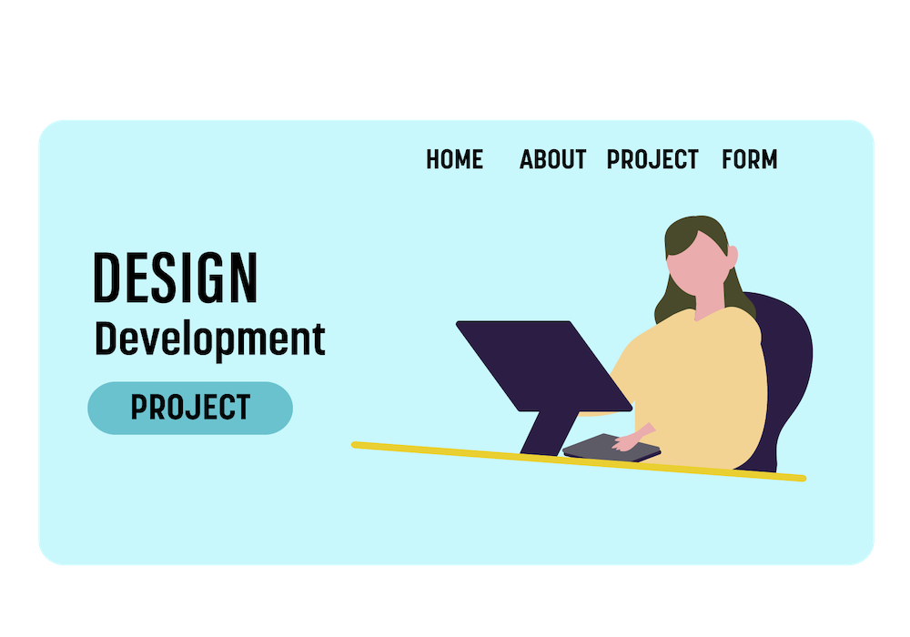
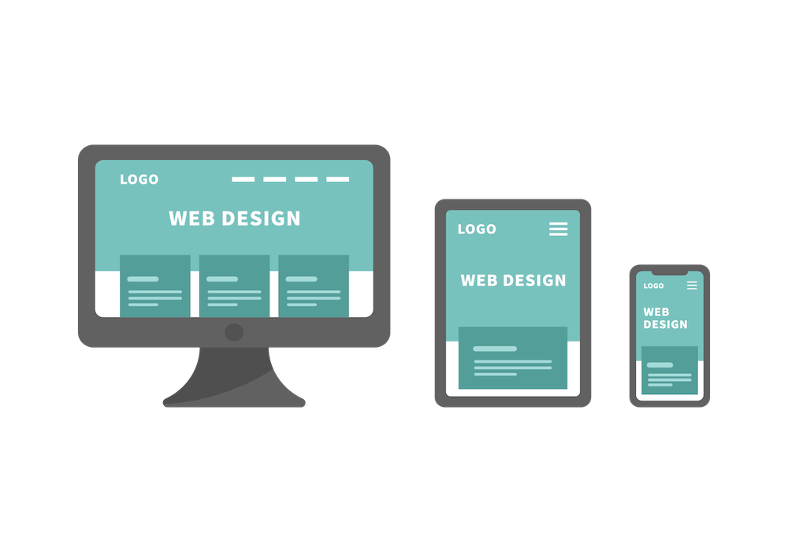

Juki
Otsuka
Otsuka
-Portfolio
Works

実績 01
実績 02
実績 03
本ポートフォリオもデザインからコーディングまで行いました。制作物の一部としてご覧ください。
Service
Coding
HTML,CSS(tailwindcss),JavaScriptを使って、保守性と効率性を兼ね備えたクリーンなコードを提供します。

Desigh
直感的でユーザーフレンドリーなデザインを実現します。モダンなデザイントレンドを取り入れながら、ブランドイメージにマッチした魅力的なUIを構築します。

Responsive
あらゆるデバイスで快適に閲覧できるレスポンシブデザインを実現します。スマートフォン、タブレット、PCに最適化した表示で、ユーザー体験を最大化します。
About
大塚じゅき
2001年生まれ。
24年3月に大学を卒業後、同年4月からシステムエンジニアとしてキャリアをスタートしました。
現在は、システム開発・ソフトウェア事業・デザイン事業に携わってます。
趣味は体を動かすことで、自宅にヨガマットを引いて筋トレをするのが日課です。また、スキル向上のためにオンラインで学習を進めたり、新しい技術に触れる時間も大切にしています。
新しいことを学ぶことが好きで、仕事では「細かいところまで丁寧に」をモットーにしています。デザインとエンジニアリングの両面からアプローチするものづくりを大切にし、「見る人・使う人に喜んでもらえること」を目指しています。
About
下記フォームよりお問い合わせください。